What the simulation contains
2 scenes
2 devices
3 props
7 movable parts
11 hand anchors
11 action primitives
7 grip templates
3 sequences
2 recorded runs
Scenes kitchen_microwave
counter 0.9 m · device microwave · props bowl · cameras external, ego, detail
office_printer
sideboard 0.95 m · device printer · props paper_stack_desk · cameras external, ego, detail
Assets Human
MakeHuman CC0 meshes, assembled with MPFB 2 1.77 m adult · 163 bones · articulated fingers · IK arms, locked feet
microwave_robocasa_032
NVIDIA PhysicalAI MJCF via RoboCasa · CC BY 4.0 5 movable parts · 2 contact-tested keys · 5 hand anchors
printer_generic
procedural, this project (no manufacturer model) 2 movable parts · 2 contact-tested keys · 6 hand anchors
bowl
procedural, this project 0.35 kg · 4 grasp points
mug
procedural, this project 0.3 kg · 1 grasp points
paper stack desk
procedural, this project 0.5 kg · 2 grasp points
Downloaded, not used yet (RoboCasa fixture pack, MJCF models): Blender001 1 Blender002 1 Blender003 1 Blender004 1 Blender006 1 Blender008 1 Blender009 1 Blender010 1 Blender011 1 Blender012 1 Blender013 1 Blender014 1 Blender015 1 Blender016 1 Blender018 1 Blender019 1 Blender020 1 Blender021 1 Blender022 1 Blender023 1 Blender026 1 Blender027 1 Blender028 1 Blender029 1 Blender030 1 blenders 25 cabinet_panels 51 coffee_machines 50 dishwashers 25 electric_kettles 25 fridges 50 handles 51 hoods 25 microwaves 50 ovens 25 sinks 50 stand_mixers 25 stoves 26 stovetops 24 toaster_ovens 50 toasters 50 windows 50
Movable parts Device shown open. Numbered markers sit on the coloured parts; the table gives joint type, travel and the mechanism label used in the runs.
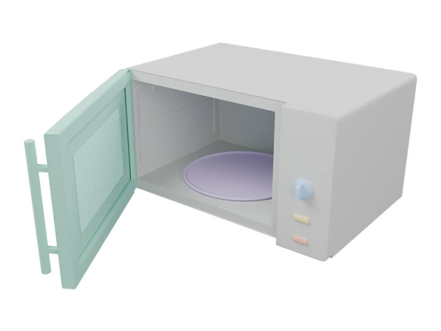
door 1 start_button 2 stop_button 3 timer_knob 4 turntable 5 microwave_robocasa_032 joint travel mechanism 1 ↻ hinge 90° assisted_grasp 2 ↔ slide 3 mm contact_dynamics 3 ↔ slide 3 mm contact_dynamics 4 ↻ hinge 300° assisted_grasp 5 ↻ hinge free spin device_motor 6 ✦ effect illustrative_effect 7 ✦ effect illustrative_effect
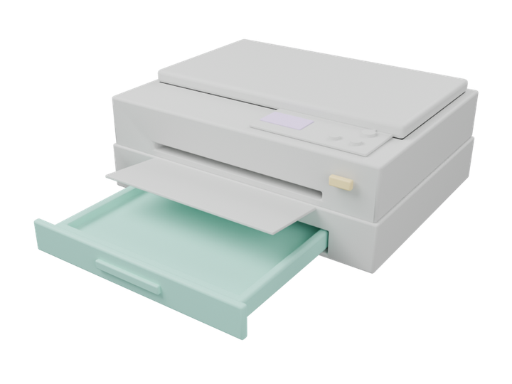
paper_tray 1 paper_stack 2 ok_button 3 display 5 printer_generic joint travel mechanism 1 ↔ slide 260 mm pull open: assisted_grasp push close: contact_dynamics 2 · fixed rides with the tray assisted_grasp 3 ↔ slide 2 mm contact_dynamics 4 · fixed appears during the print effect illustrative_effect 5 ✦ effect illustrative_effect 6 ✦ effect illustrative_effect
Action primitives A sequence is a list of these steps (hand, target anchor, grip, duration, mechanism). Pictures are frames from the recorded runs.
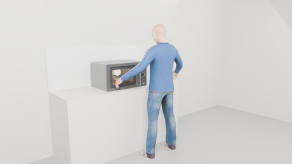
microwave_use · watch · external view · 32.8 s
idle
stand still; device effects may play
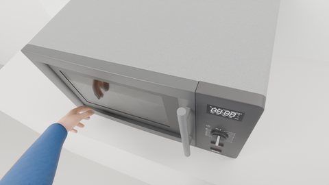
microwave_use · look_panel · ego view · 22.0 s
look_at
turn head and gaze to a target (runs alongside hand steps)
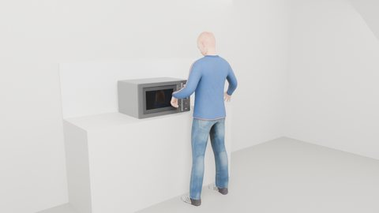
microwave_use · reach_handle · external view · 2.0 s
reach
move the hand to a stand-off in front of the anchor
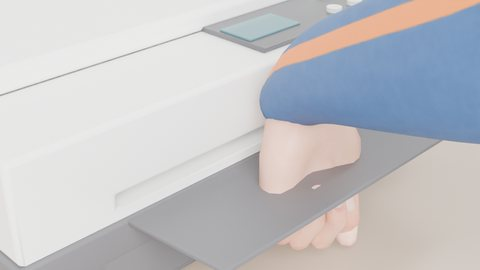
printer_use · grasp_tray · detail view · 3.3 s
pregrasp
close in and align the grip on the anchor
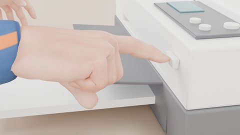
printer_use · press_ok · detail view · 22.9 s
press
push the fingertip along the normal; the key answers in MuJoCo
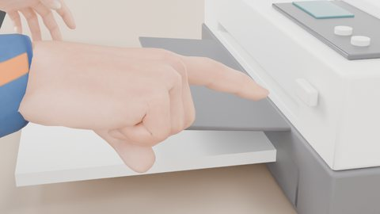
printer_use · release_ok · detail view · 23.4 s
release
back off from the anchor
microwave_use · right_back_1 · external view · 29.6 s
retreat
return the hand to the side
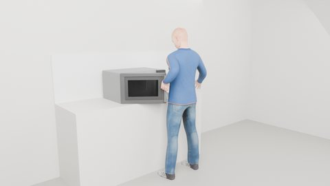
microwave_use · open_door · external view · 4.8 s
pull
hand attached to a part: drive its joint (open / out)
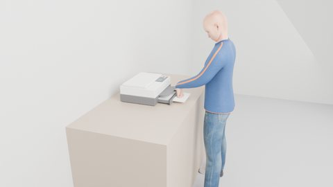
printer_use · push_tray · external view · 17.6 s
push
hand attached to a part: drive its joint (close / in)
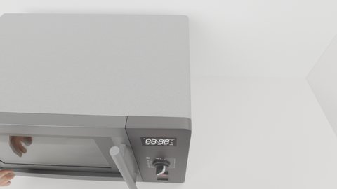
microwave_use · turn_knob · ego view · 24.5 s
rotate
hand attached to a part: turn its hinge
microwave_use · place_bowl · external view · 10.9 s
pick_place
grasp a prop, lift, carry, set down on an anchor
Grip templates Finger curl per template (thumb, index, middle, ring, pinky; bar = curl 0–1).
open
thumb curl 0.0 index curl 0.0 middle curl 0.0 ring curl 0.0 pinky curl 0.0 thumb abd. 0 rad · —
relaxed
thumb curl 0.15 index curl 0.15 middle curl 0.2 ring curl 0.25 pinky curl 0.3 thumb abd. 0.1 rad · —
index_point
thumb curl 0.85 index curl 0.0 middle curl 0.85 ring curl 0.95 pinky curl 1.0 thumb abd. 0.25 rad · index_tip
handle_wrap
thumb curl 0.6 index curl 0.75 middle curl 0.8 ring curl 0.85 pinky curl 0.85 thumb abd. 0.7 rad · palm
bar_hook
thumb curl 0.5 index curl 0.8 middle curl 0.85 ring curl 0.85 pinky curl 0.85 thumb abd. 0.5 rad · palm
pinch
thumb curl 0.5 index curl 0.55 middle curl 0.8 ring curl 0.9 pinky curl 0.95 thumb abd. 0.8 rad · pinch_center
open_palm
thumb curl 0.1 index curl 0.05 middle curl 0.05 ring curl 0.05 pinky curl 0.05 thumb abd. 0.2 rad · palm
Tasks: sequences and their steps
microwave_press microwave · 11.0 s · 8 steps · hands: right · planned schedule only (no rendered run)
settle press start_button wait · interior_light, turntable
gaze left hand right hand body device 0s 5s 10s settle · idle · 0.0–1.2 s · kinematic settle look · look_at · 1.2–1.8 s · kinematic reach · reach right · 1.2–3.3 s · kinematic reach align · pregrasp right · 3.3–4.1 s · kinematic align press · press right · 4.1–4.9 s · contact_dynamics press release · release right · 4.9–5.4 s · kinematic retreat · retreat right · 5.4–7.0 s · kinematic retreat watch · idle · 7.0–11.0 s · kinematic watch interior_light · effect interior_light turntable · effect turntable microwave_use microwave · 51.1 s · 38 steps · hands: left, right · recorded run microwave_use_seed37 · click a bar or frame to jump the viewer
settle pull door move bowl → cavity_place_right push door rotate timer_knob press start_button wait · interior_light, turntable pull door move bowl → home: bowl
gaze left hand right hand body device 0s 5s 10s 15s 20s 25s 30s 35s 40s 45s 50s settle · idle · 0.0–1.0 s · kinematic look_door · look_at · 1.0–1.6 s · kinematic reach_handle · reach left · 1.0–3.0 s · kinematic grasp_handle · pregrasp left · 3.0–3.7 s · kinematic open_door · pull left · 3.7–5.9 s · assisted_grasp release_door · release left · 5.9–6.5 s · kinematic left_back_1 · retreat left · 6.5–7.9 s · kinematic look_bowl · look_at · 7.9–8.5 s · kinematic place_bowl · pick_place left · 7.9–13.9 s · assisted_grasp place_bowl left_back_2 · retreat left · 13.9–15.3 s · kinematic look_door_2 · look_at · 15.3–15.9 s · kinematic reach_handle_2 · reach left · 15.3–17.2 s · kinematic grasp_handle_2 · pregrasp left · 17.2–18.0 s · kinematic close_door · push left · 18.0–20.0 s · assisted_grasp release_door_2 · release left · 20.0–20.5 s · kinematic left_back_3 · retreat left · 20.5–21.7 s · kinematic look_panel · look_at · 21.7–22.3 s · kinematic reach_knob · reach right · 21.7–23.2 s · kinematic pinch_knob · pregrasp right · 23.2–23.9 s · kinematic turn_knob · rotate right · 23.9–25.1 s · assisted_grasp release_knob · release right · 25.1–25.6 s · kinematic look_start · look_at · 25.6–26.1 s · kinematic reach_start · reach right · 25.6–26.9 s · kinematic align_start · pregrasp right · 26.9–27.6 s · kinematic press_start · press right · 27.6–28.4 s · contact_dynamics release_start · release right · 28.4–28.9 s · kinematic right_back_1 · retreat right · 28.9–30.3 s · kinematic watch · idle · 30.3–35.3 s · kinematic watch look_door_3 · look_at · 35.3–35.9 s · kinematic reach_handle_3 · reach left · 35.3–37.2 s · kinematic grasp_handle_3 · pregrasp left · 37.2–38.0 s · kinematic reopen_door · pull left · 38.0–40.2 s · assisted_grasp release_door_3 · release left · 40.2–40.8 s · kinematic left_back_4 · retreat left · 40.8–42.2 s · kinematic look_cavity · look_at · 42.2–42.8 s · kinematic take_bowl · pick_place left · 42.2–48.2 s · assisted_grasp take_bowl left_back_5 · retreat left · 48.2–49.6 s · kinematic end · idle · 49.6–51.1 s · kinematic interior_light · illustrative_effect interior_light turntable · device_motor turntable contact_start @ 27.90 s (start_button, measured) button_activated @ 27.95 s (start_button, measured) button_released @ 28.51 s (start_button, measured) contact_end @ 28.51 s (start_button, measured) 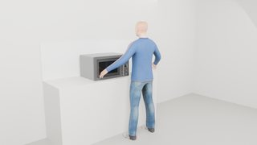
0.4 s · settle 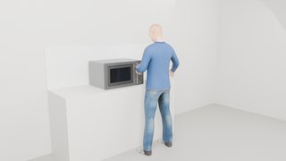
3.8 s · pull door 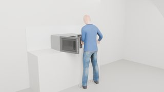
10.9 s · move bowl → cavity_place_right 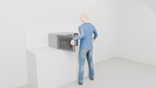
17.9 s · push door 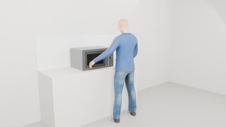
23.3 s · rotate timer_knob 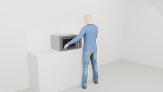
27.5 s · press start_button 32.3 s · wait · interior_light, turntable 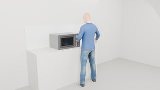
38.1 s · pull door 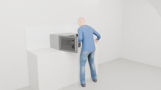
45.8 s · move bowl → home: bowl printer_use printer · 35.2 s · 29 steps · hands: left, right · recorded run printer_use_seed37 · click a bar or frame to jump the viewer
settle pull paper_tray move paper_stack_desk → paper_stack_place push paper_tray press ok_button wait · display, output_sheet reach output_sheet
gaze left hand right hand body device 0s 5s 10s 15s 20s 25s 30s 35s settle · idle · 0.0–1.0 s · kinematic look_tray · look_at · 1.0–1.6 s · kinematic reach_tray · reach left · 1.0–3.0 s · kinematic grasp_tray · pregrasp left · 3.0–3.7 s · kinematic pull_tray · pull left · 3.7–5.9 s · assisted_grasp release_tray · release left · 5.9–6.4 s · kinematic left_back_1 · retreat left · 6.4–7.6 s · kinematic load_paper · pick_place left · 7.6–13.1 s · assisted_grasp load_paper look_stack · look_at · 7.6–8.2 s · kinematic left_back_2 · retreat left · 13.1–14.3 s · kinematic look_tray_2 · look_at · 14.3–14.9 s · kinematic reach_tray_2 · reach left · 14.3–16.1 s · kinematic grasp_tray_2 · pregrasp left · 16.1–16.7 s · kinematic push_tray · push left · 16.7–18.5 s · assisted_grasp release_tray_2 · release left · 18.5–19.0 s · kinematic left_back_3 · retreat left · 19.0–20.2 s · kinematic look_ok · look_at · 20.2–20.8 s · kinematic reach_ok · reach right · 20.2–21.8 s · kinematic align_ok · pregrasp right · 21.8–22.4 s · kinematic press_ok · press right · 22.4–23.2 s · contact_dynamics release_ok · release right · 23.2–23.7 s · kinematic right_back_1 · retreat right · 23.7–24.9 s · kinematic print · idle · 24.9–28.9 s · kinematic print look_sheet · look_at · 28.9–29.4 s · kinematic reach_sheet · reach right · 28.9–30.4 s · kinematic pinch_sheet · pregrasp right · 30.4–31.1 s · kinematic check_sheet · release right · 31.1–32.3 s · kinematic right_back_2 · retreat right · 32.3–33.7 s · kinematic end · idle · 33.7–35.2 s · kinematic display · illustrative_effect display output_sheet · illustrative_effect output_sheet contact_start @ 22.71 s (ok_button, measured) button_activated @ 22.75 s (ok_button, measured) button_released @ 23.31 s (ok_button, measured) contact_end @ 23.30 s (ok_button, measured) 0.4 s · settle 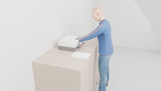
3.6 s · pull paper_tray 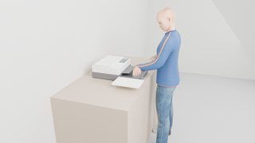
10.3 s · move paper_stack_desk → paper_stack_place 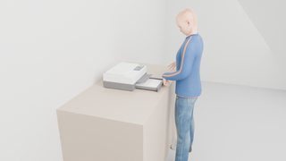
16.7 s · push paper_tray 22.1 s · press ok_button 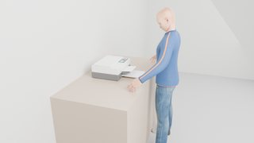
26.5 s · wait · display, output_sheet 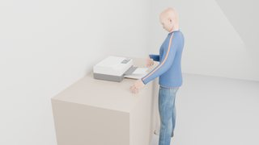
31.4 s · reach output_sheet